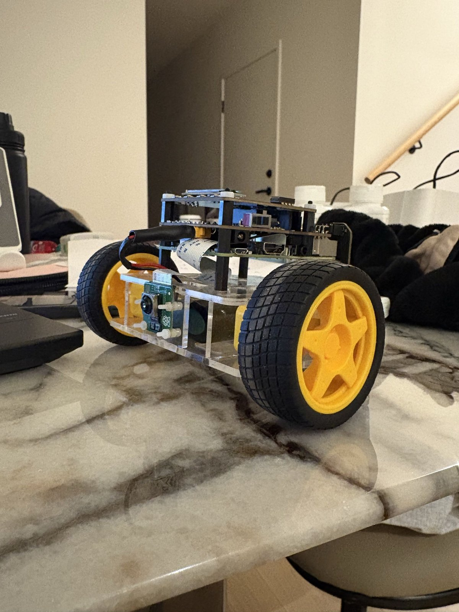
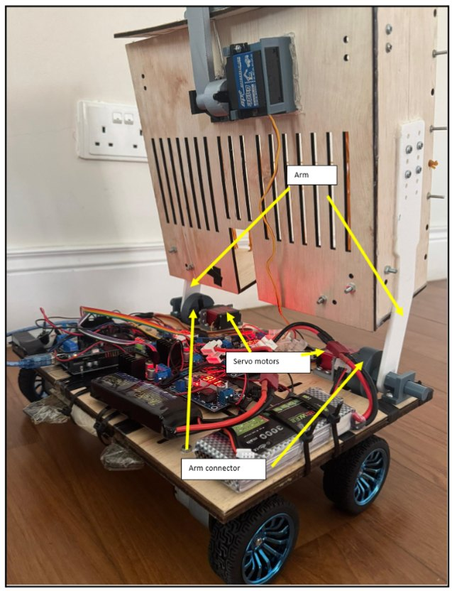
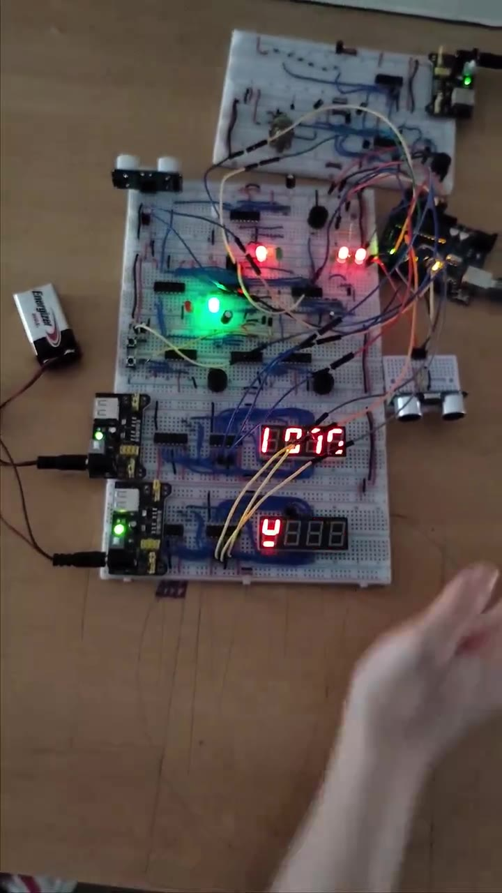

TRC4407 · Aug to Oct 2026
Hi, I'm Yong Sin, but feel free to call me Yancy. I'm a mechatronics engineering student who enjoys turning ideas into real systems through design, coding, control logic and hands-on prototyping.
I'm studying a Bachelor of Engineering (Honours) in Mechatronics at Monash University, with an expected graduation in July 2027. I enjoy projects that connect mechanical design, embedded systems, automation and software, especially when I can follow an idea from planning to testing.
My experience so far includes PLC-controlled mechanisms, robotics, FPGA-based systems, workshop fabrication and CAD visualisation. I like learning by building, debugging and improving things in real life.
I scored full marks in the SolidWorks CSWA certification, and I enjoy working across both software and hardware in team projects.
Eight university engineering projects spanning control, embedded systems, robotics, mechanical design and manufacturing. Open any card to see the details, media and project outcomes.







Small CAD and visualisation experiments, including playful renders with AI assisted backgrounds.
I also keep a small creative gallery for CAD and visualisation work outside formal reports. You can open it here if you would like to see the LEGO mahjong and stylised tree visuals.